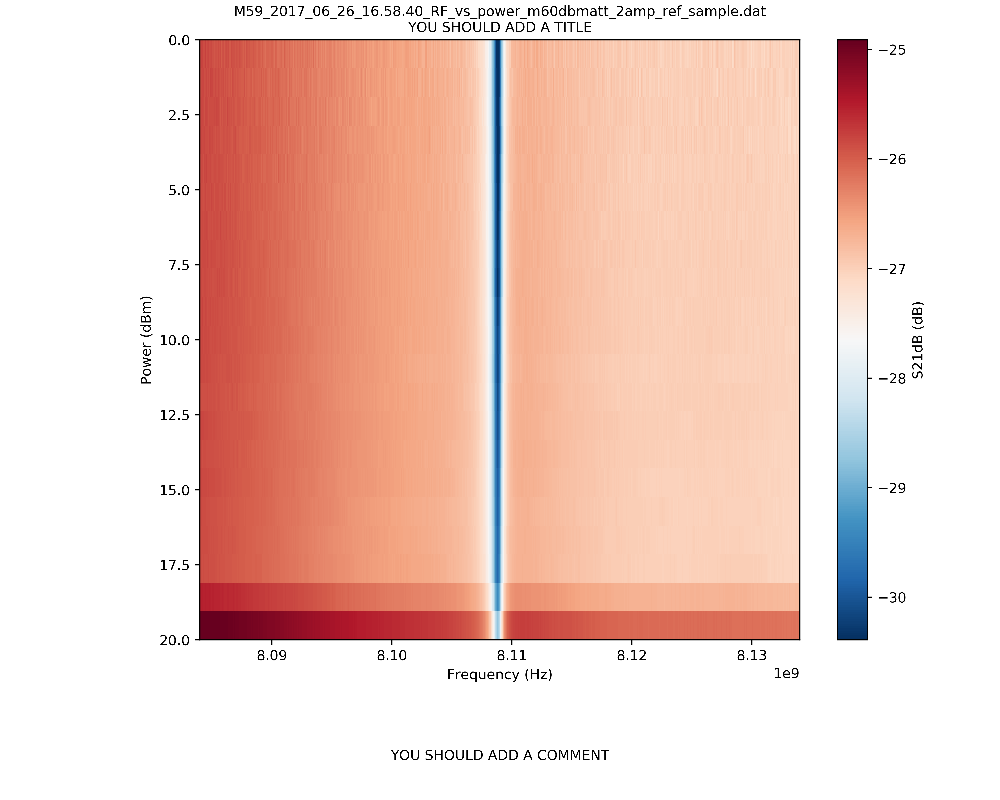

Example for autoplot¶
Example for quickly displaying and saving a 2D map of data
There are various options available for autoplot. This only returns the figure, not the data itself.

2D map of M59_2017_06_26_16.58.40_RF_vs_power_m60dbmatt_2amp_ref_sample.dat.
"""Example for quickly displaying and saving a 2D map of data
There are various options available for autoplot. This only returns the figure, not the data itself.
"""
import stlabutils
# Import data
myfilename = './data/M59_2017_06_26_16.58.40_RF_vs_power_m60dbmatt_2amp_ref_sample.dat'
# Plot data
stlabutils.autoplot(
myfilename,
xlab='Frequency (Hz)',
ylab='Power (dBm)',
zlab='S21dB (dB)',
show=True,
save=True)